발견
내가 실제로 이해하거나 쓰고 싶었던 표현
AI-ASSISTED SENTENCE FLASHCARDS · WINDOWS 10/11
Language Miner는 AI 기반 문장 플래시카드 자동 생성·복습 앱입니다. 책·웹페이지·영상에서 실제 표현을 고르면 읽기·듣기·말하기 목적에 맞는 카드 초안을 만듭니다.
AI는 미연결 상태로 시작하며 직접 입력으로도 사용할 수 있습니다. 문서 리더와 Life Mining에서는 초안을 고쳐 저장하고, 웹 리더에서는 결과를 확인한 뒤 맞지 않으면 문장이나 표현을 다시 선택합니다.
무엇을 받을지 모르겠다면 설치판을 선택하세요. 현재 v0.1.0-beta.1 공개 베타입니다. AI를 연결하지 않아도 카드와 복습부터 사용할 수 있습니다. 설치부터 첫 카드까지 화면으로 보기
I’m running a little late.
조금 늦을 것 같아요.
단어만 외우면 어떤 동사·전치사와 어울리는지, 언제 어떤 말투로 쓰는지가 빠지기 쉽습니다. 실제 문장은 어휘·문법·상황을 한 덩어리로 남기고, 답을 보기 전 떠올리는 복습은 필요한 순간에 꺼낼 길을 만듭니다.
내가 실제로 이해하거나 쓰고 싶었던 표현
뜻·맥락·소리를 목적에 맞게 정리
답을 보기 전에 먼저 회상
말하기·영작·캐릭터 대화에서 변형
학습 미션 보상을 PlayZone 진행에 사용
웹 리더가 모든 카드를 한꺼번에 만드는 방식이 아닙니다. 읽기·듣기·말하기 화면에서 필요한 카드만 만듭니다. 아래 이미지는 실제 앱 화면이며, 누르면 원본 크기로 볼 수 있습니다.
읽기 카드 · READING
문서 리더나 웹 리더에서 실제 문장을 고르고, 직접 적었거나 AI가 도운 뜻·맥락을 확인해 저장합니다.
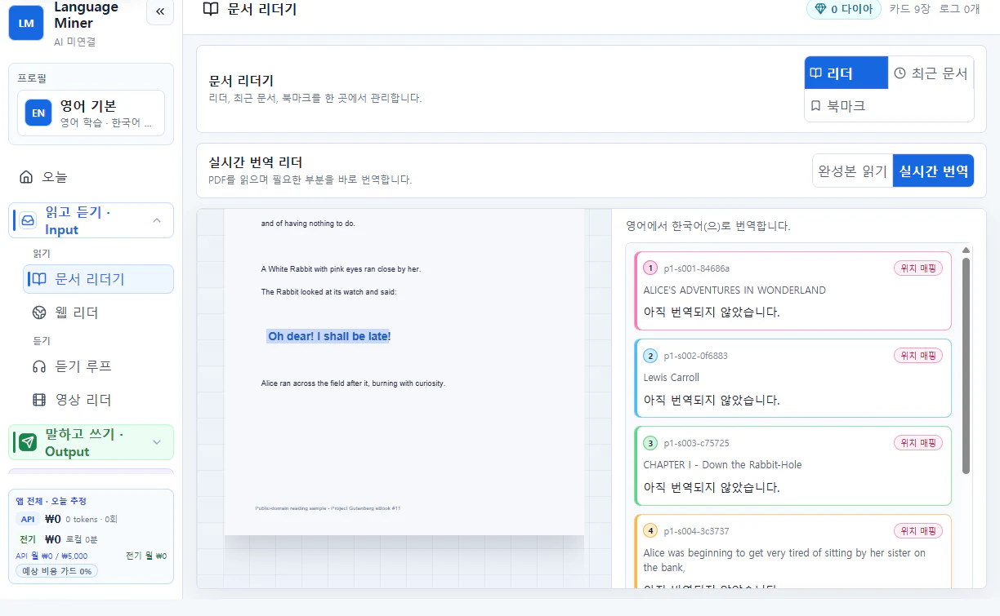
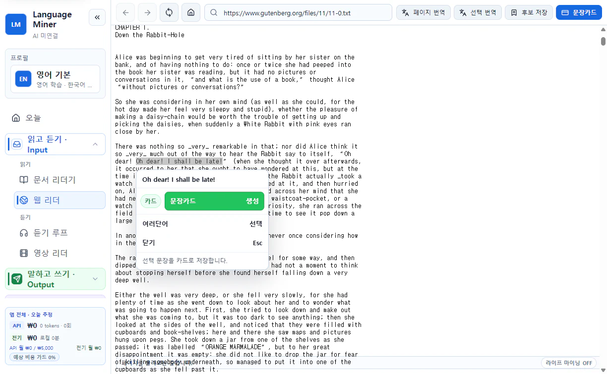
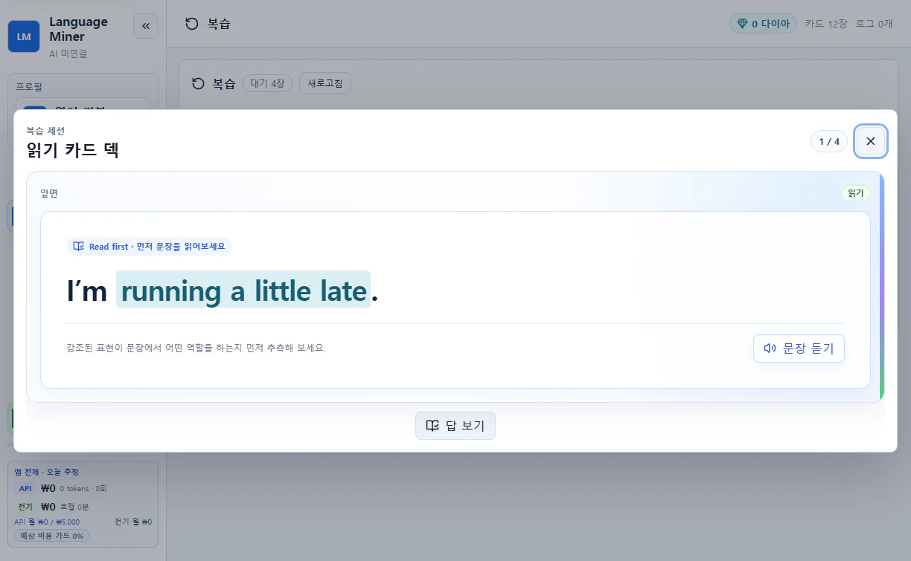
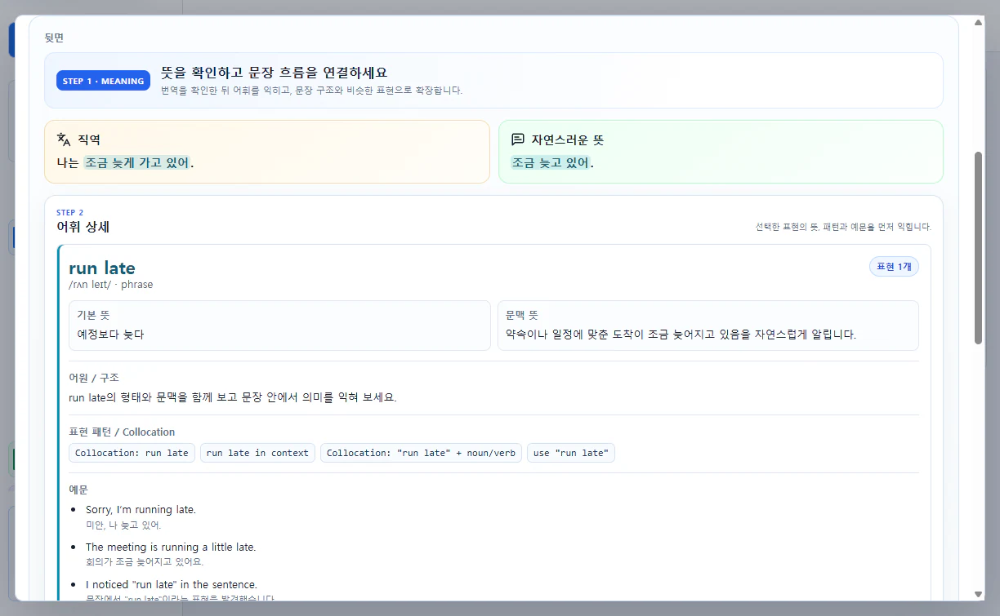
듣기 카드 · LISTENING
잘 안 들리는 짧은 구간을 듣기 루프나 영상 리더에서 반복한 뒤, 그 소리와 자막을 한 카드에 남깁니다.
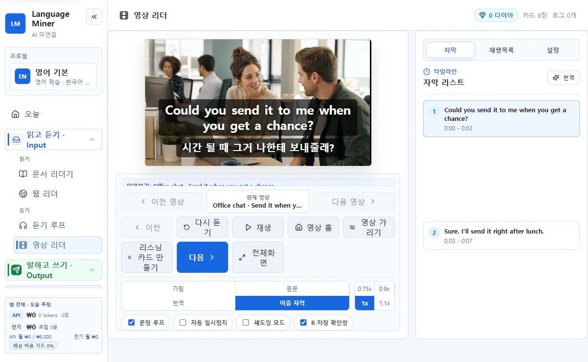
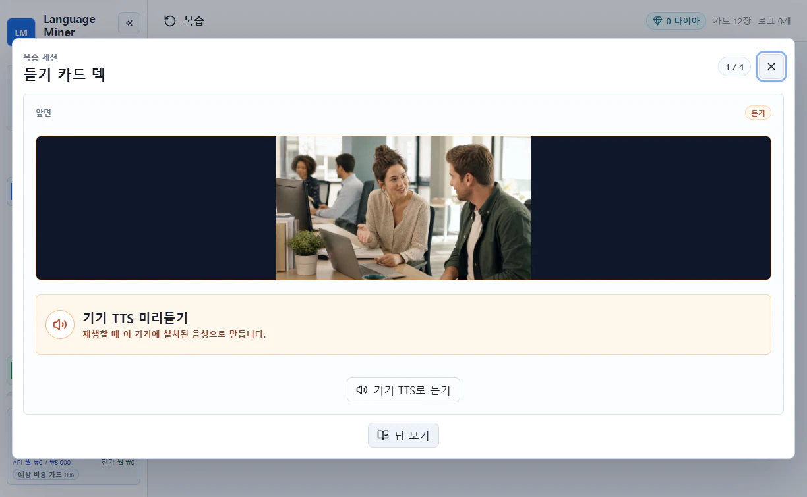
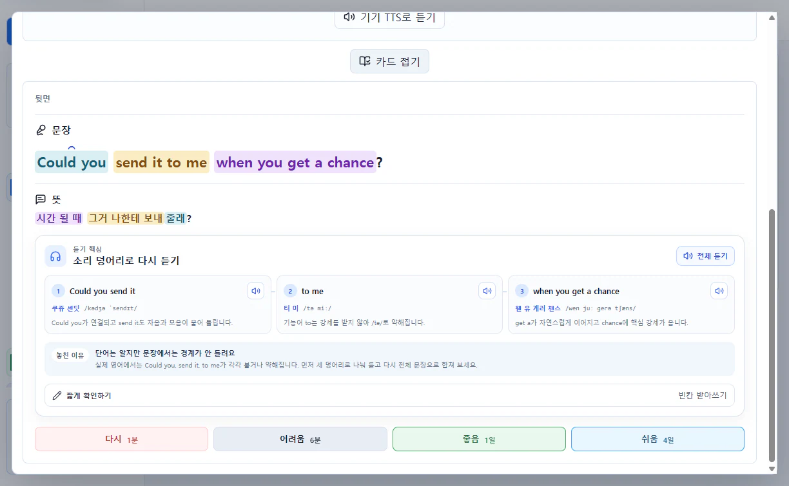
말하기 카드 · SPEAKING
Life Mining에 실제로 하고 싶었던 말을 적고, 자연스러운 영어 초안과 대화 상황을 확인해 말하기 카드로 저장합니다.
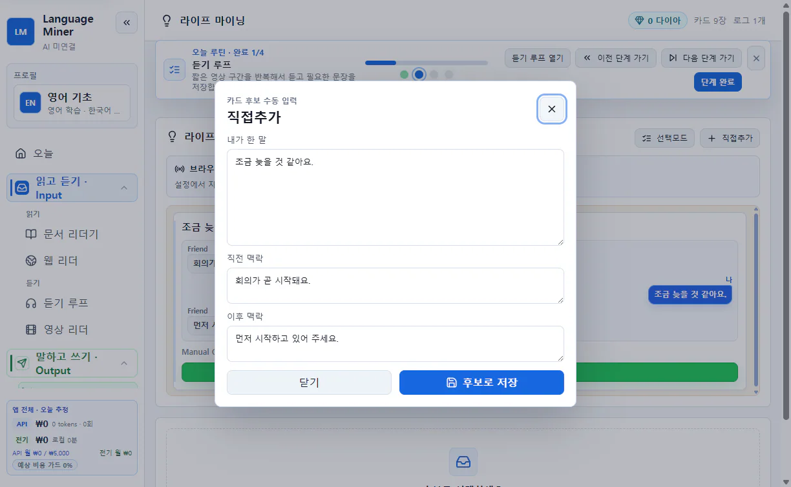
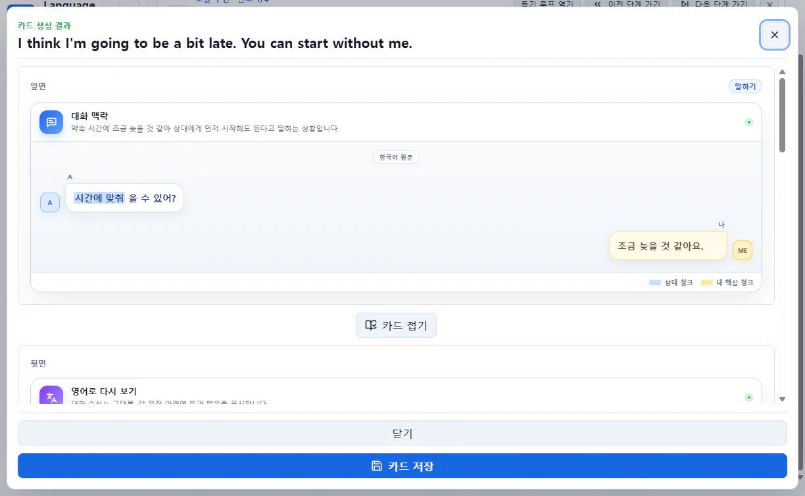
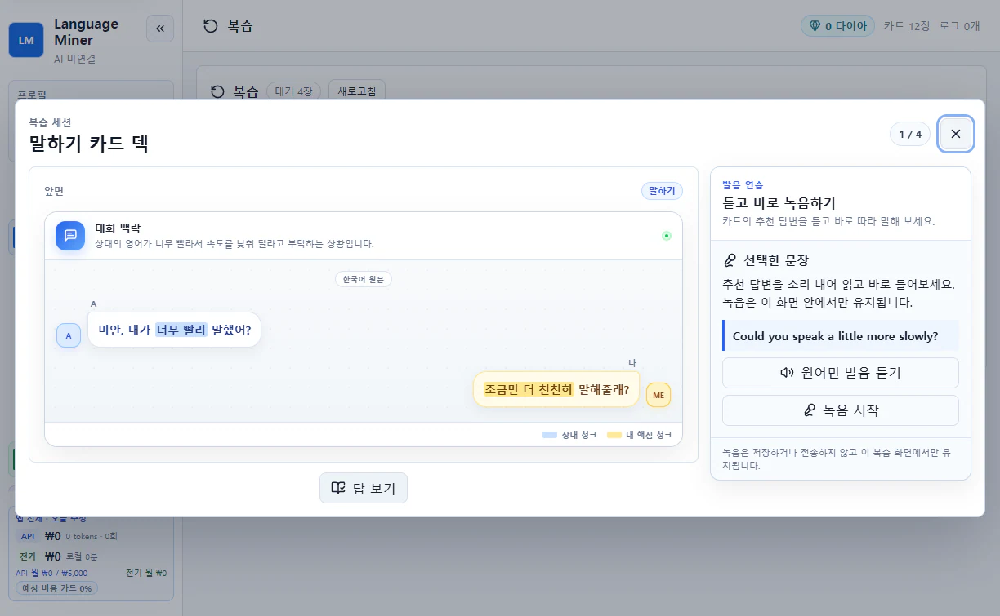
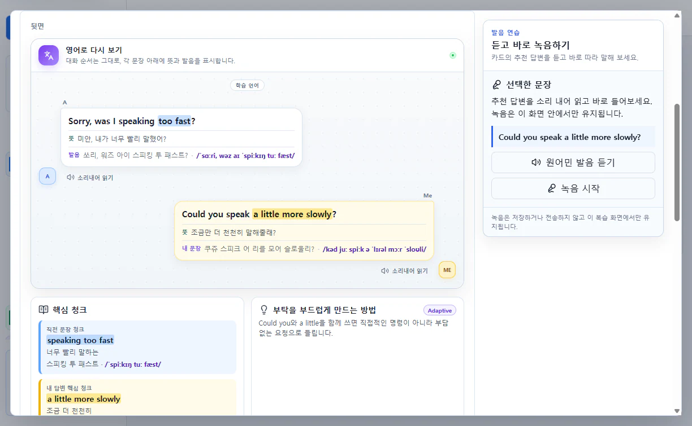
세 카드 모두 복습 일정에 따라 다시 나타납니다. 답을 떠올린 뒤 공개하고, 얼마나 어려웠는지 고르면 다음 복습 시점이 정해집니다.


WRITING IS A SEPARATE PRACTICE
긴 글을 직접 쓰는 단계까지 가는 학습자는 비교적 적기 때문에, 쓰기는 네 번째 카드 덱이 아니라 범용적인 별도 연습으로 두었습니다. 배운 문장과 같은 뜻을 짧게 영작하고 로컬 비교 결과를 확인할 수 있습니다.

다이아는 현금으로 판매하지 않습니다. 읽기 카드 만들기, 듣기, 말하기 카드 처리, 복습과 영작 같은 학습 미션을 완료하고 직접 받기를 눌러 얻습니다.
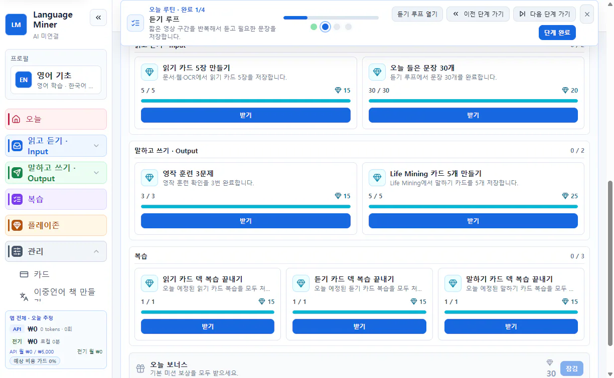
PLAYZONE
PlayZone은 저장한 표현을 게임 속 문제로 내는 공간이 아닙니다. 다이아를 장비·입장·편의 기능처럼 게임 제작자가 정한 진행 요소에 사용합니다.
“조금만 결제하면 더 강해질 텐데”라는 마음을 현금 결제가 아니라 학습 행동으로 연결합니다. 재미를 약하게 만든 학습용 게임 대신, 재미있는 게임과 공부의 보상을 연결하려는 설계입니다.
PlayZone 게임 둘러보기코딩을 깊이 배우지 않아도 Codex나 Claude Code 같은 파일 작업형 에이전트에게 아이디어를 설명하고 작은 웹게임을 만들 수 있습니다. Language Miner는 그 결과를 실행하고, 공유하고, 학습 보상까지 연결하는 공간을 제공합니다.
CHARACTER CARDS
이름·성격·말투·상황과 표정 이미지를 정해 내 캐릭터를 만듭니다. 다른 사람이 공유한 카드를 가져오거나, 내 카드를 파일로 내보내 콘텐츠 허브에서 공유할 수도 있습니다.
성격과 대화 배경을 적습니다.
내가 선택한 AI 연결로 캐릭터챗을 시작합니다.
캐릭터 카드를 내보내 공개 링크로 나눕니다.
GAMEKIT + CODEX OR CLAUDE CODE
GameKit에는 게임이 다이아를 어떻게 요청해야 하는지와 .lemgame 파일을 만드는 규칙이 들어 있습니다. 폴더를 에이전트에 열고 원하는 게임과 다이아 사용 방식을 평범한 말로 설명하세요.
GitHub에서 GameKit 폴더를 받아 압축을 풉니다.
Codex 또는 Claude Code가 규칙 파일을 함께 읽게 합니다.
“고양이가 던전을 탐험하고, 다이아는 부활에 쓰고 싶어”처럼 설명합니다.
조작법·화면·난이도·다이아 사용처를 고르며 다듬습니다.
완성 파일을 PlayZone에 넣고 콘텐츠 허브에 공개 링크를 올립니다.

콘텐츠 허브에서 다른 사용자의 게임과 캐릭터를 보고, 원하는 파일을 앱에 넣으면 됩니다.

YOUR FIRST 10 MINUTES
카드와 학습 기록은 기본적으로 내 PC에 저장됩니다. AI는 미연결 상태로 시작하며 필요한 기능만 나중에 선택할 수 있습니다.
카드와 학습 기록은 기본적으로 이 PC에 저장됩니다.
필요할 때만 로컬 Ollama 또는 본인의 클라우드 키를 연결합니다.
클라우드 AI를 쓸 때 공급자·전송 내용·예상 호출을 먼저 확인합니다.
.lembackup을 만들고 복원 미리보기로 포함 범위를 확인합니다.
DOWNLOAD FOR WINDOWS
계속 사용할 내 PC에는 설치판을 추천합니다. 설치 과정 없이 먼저 시험하려면 포터블판을 고르세요. 두 버튼 모두 공식 배포 파일 다운로드를 바로 시작합니다.